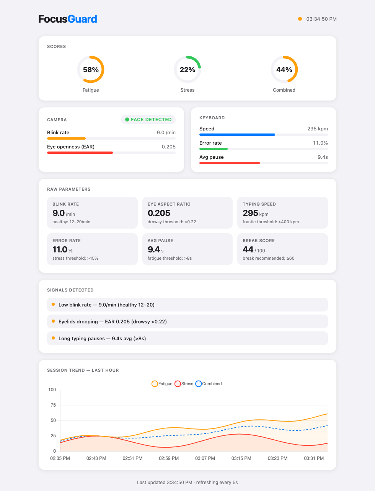

A lightweight macOS menu-bar app that passively watches two signal streams: camera (blink rate
and eye openness via MediaPipe face mesh) and keyboard (typing speed, error rate, pause length),
and fuses them into live Fatigue and Stress scores. Below is the companion Flask dashboard,
captured live with sample session data.
PythonMediaPipeOpenCVPyObjCFlaskpynput
Screenshot of the real dashboard UI served by the app, populated with a representative session. Live, it auto-refreshes every 5s from /api/status and /api/history. Click to enlarge.
Score rings
Fatigue, Stress, and a weighted Combined score (0.6 / 0.4), color-coded green → yellow → red.
Live gauges
Camera and keyboard parameters with per-metric thresholds drawn straight from config.json.
Signals detected
Plain-language reasons for the current score, e.g. low blink rate, drooping eyelids, long pauses.
Session trend
Last hour of Fatigue / Stress / Combined from the synchronized CSV log via /api/history.
Live Dashboard

FocusGuard dashboard · moderate-fatigue session. Three active signals, combined break score 44/100 (break recommended at ≥ 60).